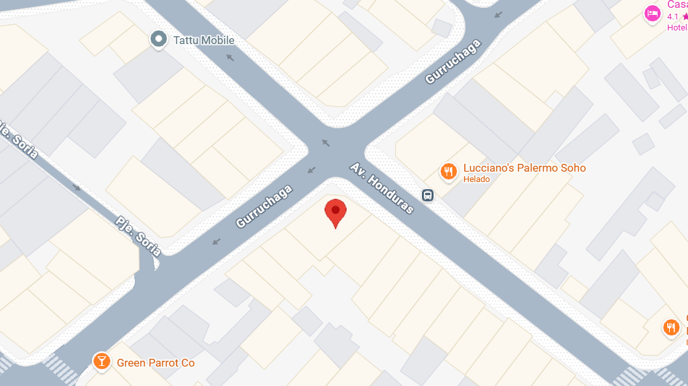

Visitanos
¡Aquí abajo te dejamos las coordenadas exactas para que sepas cómo llegar! Queremos que dejes atrás las pantallas por un rato y entres a nuestro espacio para ver, oler y saborear todo en vivo. El viaje hasta el local es el primer paso de la experiencia: un descanso en tu semana para encontrarte con amigos, estudiar en un ambiente tranquilo o simplemente pasar a buscar tu merienda favorita para llevar. Si te cuesta ubicar la dirección o es tu primera vez visitando esta zona, no dudes en escribirnos por nuestras redes. Mapea tu ruta, acércate a la barra a descubrir los aromas del día y, cuando termines tu visita, comparte tu foto en redes o califica nuestro servicio para ayudarnos a que más personas encuentren este rincón. ¡Arma tu salida para hoy, la puerta está abierta!
